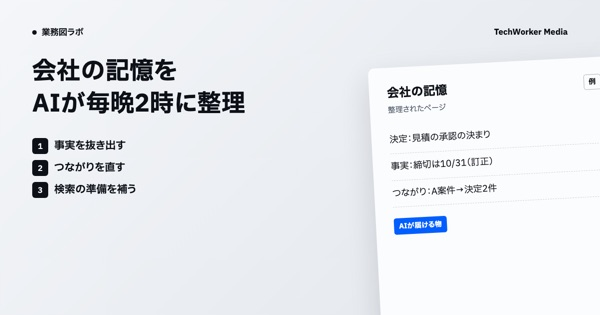

会社の記憶を、AIが毎晩2時に整理します
全社｜その日の記録から事実を抜き、つながりと重みを直して翌朝のAIに渡す
社内の決定・会話・案件の記録を、毎晩2時に整理します。事実を抜き出し、ページのつながりと重みを直し、検索の準備を補います。朝の報告や役割ごとのAIは、整理された記憶を読んで動きます。
決定：見積は担当者が承認
会話の記録：10/19 夜
訂正：締切は10/31
- 1事実を抜き出す
ページの本文から事実を1つずつ抜きます
- 2つながりを直す
ページ同士のリンクと重みを直します
- 3検索の準備を補う
埋め込みの抜けを足します
決定：見積の承認の決まり
事実：締切は10/31（訂正）
つながり：A案件→決定2件
- 人が決めること
- 人は毎回は見ず、異常のときに直します
- AIがしないこと
- 外へは出さず、会社の記憶の中だけを整えます
画面の中身は例です（実際の社名・内容ではありません）
課題
- 記録が増えるほど、つながりの切れたページが混ざります
- 翌朝のAIが、古い事実を引く心配がありました
改善結果
動き方
- 2026年6月18日から毎晩2時に起動
- 最初の4夜は道具が無く、起動だけで終了
背景
社内のAIは、会社の記憶を引いてから答えます。記録が増えるほど、古い事実や孤立したページも増えていきます。2026年6月18日から、毎晩2時に整理を自動で回し、翌朝のAIが正しく引ける状態を保っています。

業務図ラボの記事会社の記憶をAIが毎晩整理する｜記録から事実を抜き、翌朝のAIに渡す業務図→出典：社内の夜の整理の設定と記録（2026年10月20日時点）／注：画面の中身は例
この形を、御社の仕事で試せます。
業務図とAIの運用（CompanyMap AI）は、2週間の無料検証から始められます。AIに任せる仕事の引き継ぎ書（業務図・判断の一覧など）を作ってお渡しします。
ほかのご相談はお問い合わせから。業務図（CompanyMap AI）の紹介も見られます。ほかの事例
事例の一覧へ →返事と面談の準備を、AIが平日に3回拾います
平日の9時・13時・17時に、AIが受信箱と予定表を読みます。声をかけた相手からの人の返事と、今日・明日の面談を拾い、返信は下書きまで作ります。代表には送信の承認と日程だけを送ります。
6回10月16日の試しの3回を含め計6回の記録当社｜全社社内で動くAIエージェントAIの作業者に仕事を出し、合格の条件で点検します
責任者のAIが仕事を指示書にし、空いている別のアカウントのAIに出します。作業者が作って自分で確かめ、責任者が合格の条件で点検します。代表には束ねて1回だけ報告します。
246件10月18日〜20日に246件の仕事を出した当社｜発信社内で動くAIエージェント記事の調査から公開まで、AIが平日に進めます
自社サイトのメディアの記事を、AIが題材選びから公開まで進めます。調べて根拠をつけて書き、表紙と図を作り、別の目で審査します。通った回だけ公開し、PC とスマホで表示を確かめます。
29本9月2日以降に足した記事のうち、公開中は29本